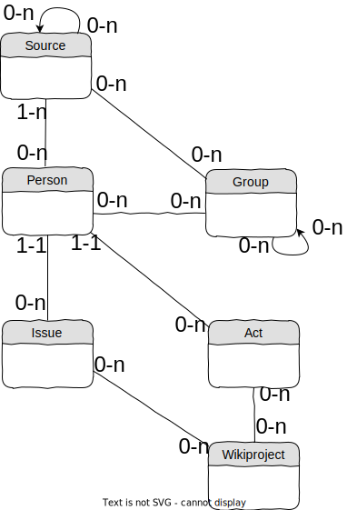

Database organization
Act
Act is the main entity of the wiki system. An act represents an official document, like a birth certificate.An act is necessarily related to 1 person (current model doesn't handle mariage certificates).
A person can be related to 0 (data not verified), 1, or several acts (like birth and death certificates).
An act is considered as a information source.
Issue
An issue represents a problem identified on a person's data.An issue is related to 1 person.
Wikiproject
A wikiproject represents a specific aspect of the database to better.A wikiproject can be related to issues that need to be fixed within this project, and to acts that have been related to persons.